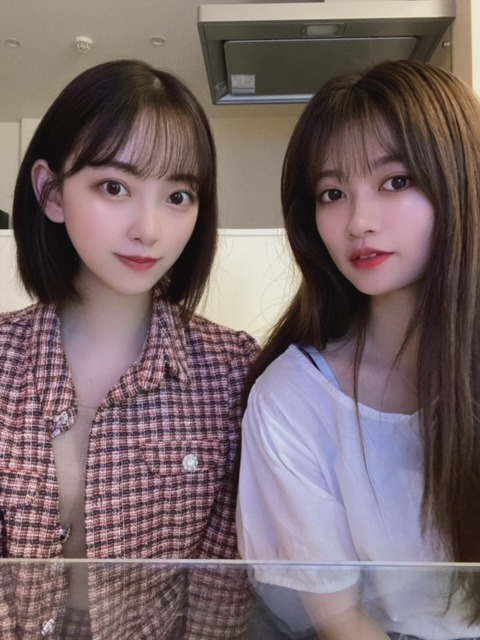
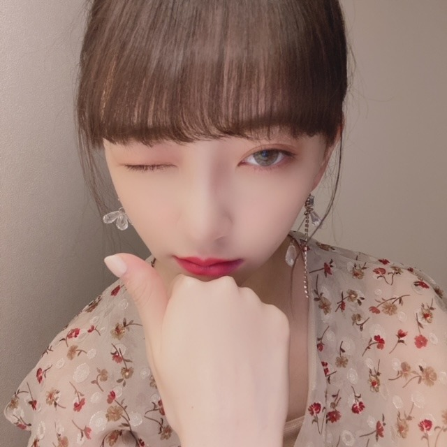

2020/0925Friみかんっみかんっ
あっという間に10月になりますね
秋の匂い、涼しさ、味覚、景色
全てがすきなので毎日ニコニコです
そしてInstagram再開しました！
いろんな投稿していきます
よかったらフォローしてください。
23日はらんぜまるの誕生日でした！
おめでとうまる^ - ^
私にとってらんぜは笑いのツボも
モノの見方や捉え方も同じで
仲のいい友達ってかんじです！
ちゃんといつも色々考えていて
わたしよりしっかりしていて
尊敬するところばかりです
さすが長女や、、、
これからもよろしくね^ - ^ だいすき〜


いつかの写真
らんぜのインスタ楽しみすぎて
まめに見てる^ - ^笑
母の誕生日もプティの誕生日もあり
9月は大好きな人の誕生日が
たくさんでした
さてさて
#未央奈にしてほしいハロウィンコス
で以前募集してみなさんのコメント
早速見させていただきました^ - ^
ありがとうございます！
冴えカノの加藤恵
魔女宅のキキ
彼女、お借りしますの更科瑠夏
空の青さを知る人よの相生あおい
五等分の花嫁の四葉
リゼロのレム
天気の子の天野陽菜
鬼滅の刃の胡蝶しのぶ
etc...
多かったのは加藤恵ちゃん、キキ、レムかな？
ショートのアニメキャラがたくさんリクエストで
来てびっくり！わたしバッチリ3次元ですが
2次元様のコスプレして大丈夫でしょうか？
不安です
加藤恵ちゃんも先日お誕生日でしたよね、推しです
なにしようか悩む〜〜
ほかにも個人的にやりたいのもあるのですが
ちなみにこの中だとなにが見たいですか？
10月、ブログやInstagramでコスプレ
どんどんあげていく予定なので
お待ちください^ - ^
短期間だけコスプレイヤーになる^ - ^
(期待なさらず)
最近とてつもなく
みかんと給食が食べたいです(ソフト麺 カレーライス 揚げパン れんこんチップス)
誰かこの夢叶えてください(/ _ ; )

隙あらば寝ようとする
ねぼすけですが
10月もがんばります！

ブルーカラコン(,,•﹏•,,)
では
2020/09/25 12:40
コメント(298)
最近乃木坂すきになったんだ！
学校の友達との話題も乃木坂！
いつかライブ行きますね〜らびゅ
学校の友達との話題も乃木坂！
いつかライブ行きますね〜らびゅ
みかんはすーぱーでみかけるようになってきましたね！
給食、ですか、、ふむ、、；
給食、ですか、、ふむ、、；
以前 堀さんがやった「リカコ」は凄すぎました。ネットニュースにもなったりしましたし。
なにが見たいかと問われれば、堀さんのやりたいものが一番みたいです。
-------------------------
給食だなんて懐かしいですね、給食はむずかしいので・・・児童心を思い出して給食代わりに
運動会のお弁当をお母さんに作っていただいたらいいんじゃないですか。
重箱に詰めて、みかんもつけて（笑）
なにが見たいかと問われれば、堀さんのやりたいものが一番みたいです。
-------------------------
給食だなんて懐かしいですね、給食はむずかしいので・・・児童心を思い出して給食代わりに
運動会のお弁当をお母さんに作っていただいたらいいんじゃないですか。
重箱に詰めて、みかんもつけて（笑）
未央奈今日も可愛い！！！
インスタ再開は、まじ沸いた！＼(^^)／
これからの投稿楽しみにしてるよ！笑
昨日、部活で右の太もも肉離れしたー
一人暮らしはこういうとき辛い〜
とりあえず、これからの未央奈と今までの未央奈を見る時間が増えたと捉えて治していきマース
あざー
じゃ！
インスタ再開は、まじ沸いた！＼(^^)／
これからの投稿楽しみにしてるよ！笑
昨日、部活で右の太もも肉離れしたー
一人暮らしはこういうとき辛い〜
とりあえず、これからの未央奈と今までの未央奈を見る時間が増えたと捉えて治していきマース
あざー
じゃ！
コスプレだったらスターシアがいい
森雪が違う人
メーテル似合いそうな人よくいる
ボンカレーとアゲバン牛乳かってみたら？
森雪が違う人
メーテル似合いそうな人よくいる
ボンカレーとアゲバン牛乳かってみたら？
未央奈ちゃん、こんばんは。
蘭世ちゃんとのツーショット、めっちゃ可愛い。
ふたりのインスタも楽しみです。
未央奈ちゃんのウインク大好きです!!!
また、更新まってます。
蘭世ちゃんとのツーショット、めっちゃ可愛い。
ふたりのインスタも楽しみです。
未央奈ちゃんのウインク大好きです!!!
また、更新まってます。
堀さん、こんばんは。
インスタグラム再開おめでとうございます。ドレス姿でもジャケット姿でもどんな格好でも表現力というのか存在感というのか、堀さんは服に負けてないから凄いと思います。表現の場が増えて本当に良かったです。
堀さんと寺田さんは頑固そうなところが似てる気がしてたんですけど、他にも共通点たくさん有ったんですね。ご家族の誕生日も祝えて良かったですね。インスタのプティくんの紹介文が堀さんそのもので面白かったです。
コスプレ計画も着々と進行中なんですね。僕は相生あおいに一票です。
前にコスプレ案聞いてたときはオススメアニメも聞いてた気がするのでついでに書くと、「東京ゴッドファーザーズ」がとてもお腹いっぱいになれるような満足度の高い映画でした。
給食のソフト麺懐かしいですね。ミートソースで食べてたような気がします。あとはミルメークとかも思い出しました。
それぞれ単品でなら通販でも揃いそうなので、沢山食べて沢山寝て頑張ってくださいね。
インスタグラム再開おめでとうございます。ドレス姿でもジャケット姿でもどんな格好でも表現力というのか存在感というのか、堀さんは服に負けてないから凄いと思います。表現の場が増えて本当に良かったです。
堀さんと寺田さんは頑固そうなところが似てる気がしてたんですけど、他にも共通点たくさん有ったんですね。ご家族の誕生日も祝えて良かったですね。インスタのプティくんの紹介文が堀さんそのもので面白かったです。
コスプレ計画も着々と進行中なんですね。僕は相生あおいに一票です。
前にコスプレ案聞いてたときはオススメアニメも聞いてた気がするのでついでに書くと、「東京ゴッドファーザーズ」がとてもお腹いっぱいになれるような満足度の高い映画でした。
給食のソフト麺懐かしいですね。ミートソースで食べてたような気がします。あとはミルメークとかも思い出しました。
それぞれ単品でなら通販でも揃いそうなので、沢山食べて沢山寝て頑張ってくださいね。
パトラッシュにすねるレム
パトラッシュってフランダースの犬でネロと一緒に天国へ行ってしまう犬が元でしょう。
なんでパトラッシュやねん？
トカゲに似た地竜の風貌もそうだけど、
パトラッシュにたとえるのは可愛そう。
そういう点からして、
片目を髪に隠して、
レムはレムでゲゲゲの鬼太郎のイメージが元にあることが推測できる。
鬼がかってますねっ！
エミリアは「おたんこなす」って言うし、
リゼロは昭和のにおいがする。
神回などで、レムは言葉が素晴らしいのでそういうこと言ってほしいけど、
人気はあるけど、
コスプレだけでそれが体現するとは思えない。
コスプレしてくれるのなら、
個人的にはSAOのアリスが好きです。
別に一目惚れしたわけではありません。
パトラッシュってフランダースの犬でネロと一緒に天国へ行ってしまう犬が元でしょう。
なんでパトラッシュやねん？
トカゲに似た地竜の風貌もそうだけど、
パトラッシュにたとえるのは可愛そう。
そういう点からして、
片目を髪に隠して、
レムはレムでゲゲゲの鬼太郎のイメージが元にあることが推測できる。
鬼がかってますねっ！
エミリアは「おたんこなす」って言うし、
リゼロは昭和のにおいがする。
神回などで、レムは言葉が素晴らしいのでそういうこと言ってほしいけど、
人気はあるけど、
コスプレだけでそれが体現するとは思えない。
コスプレしてくれるのなら、
個人的にはSAOのアリスが好きです。
別に一目惚れしたわけではありません。
未央奈更新ありがとう！
レム、四葉、しのぶ、恵、るかちゃんはやってくれーい！
期待してる笑笑
レム、四葉、しのぶ、恵、るかちゃんはやってくれーい！
期待してる笑笑
コスプレの候補、八割分からないや。笑
空の青さを知る人よ 今日WOWOWでやってたので偶然ですが録画してました！
早速どんなキャラか確かめてみるね。
空の青さを知る人よ 今日WOWOWでやってたので偶然ですが録画してました！
早速どんなキャラか確かめてみるね。
アイマスクでもう大丈夫と思って目を酷使してたら微妙にやばい状態になったから、気を付けようと思う。
コードに慣れるように弾き語りをしようと思うんだけど、伴奏にこだわりすぎて、まだ1曲も弾き語りできない。
未央奈、俺の歌、聴きたい？
未央奈をイメージして作曲してみようかな。
コードに慣れるように弾き語りをしようと思うんだけど、伴奏にこだわりすぎて、まだ1曲も弾き語りできない。
未央奈、俺の歌、聴きたい？
未央奈をイメージして作曲してみようかな。
インスタ楽しみにしてるよー！
最後の写真いいね。
応援してるよー！
最後の写真いいね。
応援してるよー！
未央奈ちゃんおはようございます‼かなり楽しみにしてます頑張ります‼気をつけて下さい！ありがとうございます！雨☔気をつけて下さい。すいません
未央奈ちゃん、おはよう…
何故か早起きしてしまいました。
外に出ると完全なる秋の空。
気持ちがいいでございます。
コスプレ、ここの中ならキキでお願いします。
何故なら…ほとんど誰だか分からんから。笑
天気の子でもいいんですが以前インスタで
見た高校生の子とさほど変わらない可能性
があるんで出来るなら違う物が見たいな。
あ、インスタ復活ありがとうだ。
念願叶って嬉しいです。黒コーデカッコいい
ライダースジャケットなのかな？
知らんけど…
あと、給食。ソフト麺と揚げパンは
当たり前過ぎたんで上げなかったけど
もちろん好きです。
僕が給食と聞いて真っ先に浮かんだのが
わかめご飯。好きだったなぁ。
それと、ミルメーク。なかったですか？
給食と言えばの記憶です。
それに、逆の記憶で椎茸が出た時は
絶望感半端なかったです。なんでも
残さず食べるのが昔からのモットーだった
ので涙目になりながら食べてました。
懐かしいなぁ。あの頃の記憶が蘇ります。
今とさほど変わってない僕が居ます。
成長してないのかもしれません。笑
映画も観たんですけどプププ…
また次の機会にコメントします。
では。
何故か早起きしてしまいました。
外に出ると完全なる秋の空。
気持ちがいいでございます。
コスプレ、ここの中ならキキでお願いします。
何故なら…ほとんど誰だか分からんから。笑
天気の子でもいいんですが以前インスタで
見た高校生の子とさほど変わらない可能性
があるんで出来るなら違う物が見たいな。
あ、インスタ復活ありがとうだ。
念願叶って嬉しいです。黒コーデカッコいい
ライダースジャケットなのかな？
知らんけど…
あと、給食。ソフト麺と揚げパンは
当たり前過ぎたんで上げなかったけど
もちろん好きです。
僕が給食と聞いて真っ先に浮かんだのが
わかめご飯。好きだったなぁ。
それと、ミルメーク。なかったですか？
給食と言えばの記憶です。
それに、逆の記憶で椎茸が出た時は
絶望感半端なかったです。なんでも
残さず食べるのが昔からのモットーだった
ので涙目になりながら食べてました。
懐かしいなぁ。あの頃の記憶が蘇ります。
今とさほど変わってない僕が居ます。
成長してないのかもしれません。笑
映画も観たんですけどプププ…
また次の機会にコメントします。
では。
未央奈ちゃん!
ブログ更新ありがとう!
蘭世ちゃんとのツーショットも超絶かわいいね！
早くライブできるとイイね!
応援してるよ☺️☺️
ブログ更新ありがとう!
蘭世ちゃんとのツーショットも超絶かわいいね！
早くライブできるとイイね!
応援してるよ☺️☺️
未央奈ちゃんブログ更新ありがとう！
未央奈ちゃんのInstagram見たよ！
すごく可愛かったよ！
Instagram楽しみにしてます！
質問です
➀ブログはどのアプリで使ってますか？
➁オレンジメイクのやり方教えてください！
またね
未央奈ちゃんのInstagram見たよ！
すごく可愛かったよ！
Instagram楽しみにしてます！
質問です
➀ブログはどのアプリで使ってますか？
➁オレンジメイクのやり方教えてください！
またね
ブログ更新ありがと〜
インスタ再開すっごく嬉しい！
コスプレ未央奈ちゃん、楽しみにしてるね〜‼︎
絶対かわいい♡
未央奈ちゃんの誕生日まで後20日！！！
インスタ再開すっごく嬉しい！
コスプレ未央奈ちゃん、楽しみにしてるね〜‼︎
絶対かわいい♡
未央奈ちゃんの誕生日まで後20日！！！
未央奈～～～～～～～。おっはー。
雨ッスね。じゃあ、また
雨ッスね。じゃあ、また
ブログ更新ありがとうございます。
給食のソフト麺は懐かしいですね！
みおなさんの四葉が見たいです。
お願いします！
給食のソフト麺は懐かしいですね！
みおなさんの四葉が見たいです。
お願いします！
未央奈〜
ブログ更新ありがとう
応援しとるけんねー^ ^
ブログ更新ありがとう
応援しとるけんねー^ ^
未央奈ちゃんのコスプレならどれも見たい気がするけど強いて言うなら胡蝶しのぶとレムあたりかな
ブルーのカラコン自分が付けると似合わない気がして手出したことなかったけど使ってみようかな、、どこのカラコンかとブルーのカラコンに合うメイク教えて貰いたい〜(><)
ブルーのカラコン自分が付けると似合わない気がして手出したことなかったけど使ってみようかな、、どこのカラコンかとブルーのカラコンに合うメイク教えて貰いたい〜(><)
チャァオ～～!☆彡
みおちゃん、こんにちは～～～～⤴️⤴️⤴️❕❤️❤️❤️❤️❤️笑顔
ブルーコンタクトした写メ～～⤴️⤴️⤴️
とっても綺麗で素敵だよ～～～⤴️⤴️⤴️❕❤️❤️❤️❤️❤️笑顔
・・❕笑顔
今～～⤴️⤴️⤴️
ライオンのグータッチ見てた～～～⤴️⤴️❕❤️❤️❤️笑顔
皆さん凄いですねぇ～～～⤴️⤴️⤴️❕❤️❤️❤️笑顔
次回番組予告で、みおちゃんが出てたので
来週めちゃめちゃ楽しみにしています❕❤️❤️❤️❤️❤️笑顔
代打で休日出勤がないことを祈りながら、楽しみにしています❕❤️❤️❤️❤️❤️笑顔
それでは、みおちゃん頑張ってねぇ～～～⤴️⤴️⤴️❕❤️❤️❤️❤️❤️笑顔
またねぇ～～❕❤️❤️❤️❤️❤️笑顔
(＠＾▽゜＠）ゞ❤️❤️❤️
❇️❇️おすまし！⚜️❇️⭐彡
ブログ更新ありがとう！！
10月に入るとなんだか眠たくなってきますよねー
10月に入るとなんだか眠たくなってきますよねー
もうすぐ、10月だね！
ということは、堀ちゃんの誕生日だね！
堀ちゃん、蘭世ちゃんコンビも良いコンビですね！
コスプレイヤー未央奈のコスプレ楽しみにしてま〜す！
個人的にはレムが見たい！
どんどん寒くなっていくので、体調には気をつけてね！
み〜おな、大好き！
ということは、堀ちゃんの誕生日だね！
堀ちゃん、蘭世ちゃんコンビも良いコンビですね！
コスプレイヤー未央奈のコスプレ楽しみにしてま〜す！
個人的にはレムが見たい！
どんどん寒くなっていくので、体調には気をつけてね！
み〜おな、大好き！
らんぜまるの写真とともにありがとう！
ブルーカラコン似合いすぎてて辛い( ᴗ ̫ ᴗ )❤︎
ブルーカラコン似合いすぎてて辛い( ᴗ ̫ ᴗ )❤︎
堀さん、こんにちは。
九月の週末もラスト。いよいよ来週は十月に入ります。秋本番。堀さんのお誕生日もありますね。充実の秋にいたしましょう。
さてさて。
#未央奈にしてほしいハロウィンコス。候補が出揃ってきたようですね。やっぱりショートカットのキャラクターが多いような気がします。候補の中では、堀さんのシーン完全再現が懐かしい『魔女の宅急便』のキキが一番観てみたいかなあ。
給食はもちろん共通のメニューも多いですが、世代や地域によってユニークなメニューもあって、盛り上がれる話題ですからね。今僕はソフト麺食べたいな。
寝る子は育つ。睡眠しっかりとって十月も元気にすごしましょう。
ではまたコメントします。
さらばだ、また会おう！（気球に乗って去りぬ〜）
九月の週末もラスト。いよいよ来週は十月に入ります。秋本番。堀さんのお誕生日もありますね。充実の秋にいたしましょう。
さてさて。
#未央奈にしてほしいハロウィンコス。候補が出揃ってきたようですね。やっぱりショートカットのキャラクターが多いような気がします。候補の中では、堀さんのシーン完全再現が懐かしい『魔女の宅急便』のキキが一番観てみたいかなあ。
給食はもちろん共通のメニューも多いですが、世代や地域によってユニークなメニューもあって、盛り上がれる話題ですからね。今僕はソフト麺食べたいな。
寝る子は育つ。睡眠しっかりとって十月も元気にすごしましょう。
ではまたコメントします。
さらばだ、また会おう！（気球に乗って去りぬ〜）
未央奈ちゃんこんにちは‼かなり楽しみにしてます‼頑張ります‼気をつけて下さい！雨☔気をつけて下さい！
10月といえば､未央奈ちゃんの誕生日じゃん!
ちょっと早いけど､おめでとう!
ちょっと早いけど､おめでとう!
みおなちゃん、大好きです
こんにちは‼︎
ブログ更新、ありがとうございます♪
ライオンのグータッチは、来週なんですね‼︎
もしかしてその場面だけ見逃しちゃったのかと思って、一瞬焦りました(笑)。
よかったよかった♪
来週、楽しみにしてますね‼︎
23日は、蘭世ちゃんのお誕生日でしたね。
蘭世ちゃん、お誕生日おめでとうございます♪
蘭世ちゃんも、もう22歳なんですね。
なんか時の流れは早いなあって思うけど、写真を見ると、もう大人っぽさも兼ね備えていて。
なんだか不思議な感覚です♪
蘭世ちゃんは大人っぽいところもあれば、子供みたいな要素もあって。
強気な発言をしたかと思えば、自虐的で気の弱い面もある。
両極の表情を持つ、不思議な魅力のある女性だなって思います♪
年齢的にも、少女と大人の女性の狭間にいる22歳。
大きく飛躍してもらいたいですね…‼︎
給食、懐かしいですね〜
なんというか、給食には給食の良さがありましたよね‼︎
ソフト麺なんて、全然コシがないんだけど(笑)、あの独特の柔らかさがまたいいっていうか。
コッペパンと牛乳を同時に口に入れた時の感触や味わいも、なんか懐かしいなって思います♪
でも、当時、しっかり味わって食べていたかというと、そんなこともなかったな。
とにかく、何かふざけまくってた(笑)。
何がそんなに面白かったのか、何でそんなに笑っていたのかも、もう忘れちゃったけど。
学生時代に戻りたいっていう気持ちになることもあるけど、あっという間に過ぎてしまうからこそ、良かった部分もあるんだろうな。
今は忘れちゃったけど、あの時はあの時なりに、辛いこともあっただろうし。
今改めて給食を食べて、あの頃を懐かしむのもアリかもしれないですね‼︎
今ネットで『給食 食べれる所』を検索してみたら、東京で給食を食べることのできる定食屋さん、居酒屋さんがいくつかヒットしました♪
こういうところに行ってみるのも面白いかもしれませんね‼︎
ではでは、また。
今日も未央奈にとっていい1日になりますように♪
ブログ更新、ありがとうございます♪
ライオンのグータッチは、来週なんですね‼︎
もしかしてその場面だけ見逃しちゃったのかと思って、一瞬焦りました(笑)。
よかったよかった♪
来週、楽しみにしてますね‼︎
23日は、蘭世ちゃんのお誕生日でしたね。
蘭世ちゃん、お誕生日おめでとうございます♪
蘭世ちゃんも、もう22歳なんですね。
なんか時の流れは早いなあって思うけど、写真を見ると、もう大人っぽさも兼ね備えていて。
なんだか不思議な感覚です♪
蘭世ちゃんは大人っぽいところもあれば、子供みたいな要素もあって。
強気な発言をしたかと思えば、自虐的で気の弱い面もある。
両極の表情を持つ、不思議な魅力のある女性だなって思います♪
年齢的にも、少女と大人の女性の狭間にいる22歳。
大きく飛躍してもらいたいですね…‼︎
給食、懐かしいですね〜
なんというか、給食には給食の良さがありましたよね‼︎
ソフト麺なんて、全然コシがないんだけど(笑)、あの独特の柔らかさがまたいいっていうか。
コッペパンと牛乳を同時に口に入れた時の感触や味わいも、なんか懐かしいなって思います♪
でも、当時、しっかり味わって食べていたかというと、そんなこともなかったな。
とにかく、何かふざけまくってた(笑)。
何がそんなに面白かったのか、何でそんなに笑っていたのかも、もう忘れちゃったけど。
学生時代に戻りたいっていう気持ちになることもあるけど、あっという間に過ぎてしまうからこそ、良かった部分もあるんだろうな。
今は忘れちゃったけど、あの時はあの時なりに、辛いこともあっただろうし。
今改めて給食を食べて、あの頃を懐かしむのもアリかもしれないですね‼︎
今ネットで『給食 食べれる所』を検索してみたら、東京で給食を食べることのできる定食屋さん、居酒屋さんがいくつかヒットしました♪
こういうところに行ってみるのも面白いかもしれませんね‼︎
ではでは、また。
今日も未央奈にとっていい1日になりますように♪
みおち、今でも未だに君らしさのセブンネット限定ver.の表紙が最高過ぎてたまらないんだけどーーー(>_<)
コスプレ楽しみにしてます
あの中だとキキがいいな～
あの中だとキキがいいな～
ブログ更新ありがと〜
インスタ再開すっごく嬉しい！
コスプレ未央奈ちゃん、楽しみにしてるね〜‼︎
絶対かわいい♡
未央奈ちゃんの誕生日まで後20日！！！
インスタ再開すっごく嬉しい！
コスプレ未央奈ちゃん、楽しみにしてるね〜‼︎
絶対かわいい♡
未央奈ちゃんの誕生日まで後20日！！！
やっほ～♪モバメありがとうね！
あーー！ハンバーグ二人前だとー。
もう、めっだよ。ヾ(・o・*)
なんてね、三人前じゃなかったから良いんじゃないー？w
それにいっぱい美味しそうに食べる未央奈が好き♪
あと目も好き。写真ありがとう～。
食べるときは食べて、その分頑張るとき頑張ってカロリーを消費すれはええと思うでー☆
あーー！ハンバーグ二人前だとー。
もう、めっだよ。ヾ(・o・*)
なんてね、三人前じゃなかったから良いんじゃないー？w
それにいっぱい美味しそうに食べる未央奈が好き♪
あと目も好き。写真ありがとう～。
食べるときは食べて、その分頑張るとき頑張ってカロリーを消費すれはええと思うでー☆
みおなちゃん～
ブログ更新ありがとう
わたしも給食食べたい
ブログ更新ありがとう
わたしも給食食べたい
ガチのコスプレ並にやってくれたら絶対話題沸騰だよ！
それこそインスタに載せてみたらいいかも！
それこそインスタに載せてみたらいいかも！
こんばんは
ハンバーグ二人前、食べたの
未央奈ちゃんが！
そんな腹減ってたの？笑
恐るべし
ごめん！まだar見てない
本当ごめん！
さっき送ってくれた写真は今回が初だよ。
眠いんだったら寝た方が身のため
ハンバーグ二人前、食べたの
未央奈ちゃんが！
そんな腹減ってたの？笑
恐るべし
ごめん！まだar見てない
本当ごめん！
さっき送ってくれた写真は今回が初だよ。
眠いんだったら寝た方が身のため
ううっ、「みかんっみかんっ」の暗号が分からない。(T_T)
話は変わって、ショート似合ってますよ。
逆三角形の顔とボブカットは似合うんです。
まえがわを長く、後側を少し短くすると、また違った感じになりますよ。
話は変わって、ショート似合ってますよ。
逆三角形の顔とボブカットは似合うんです。
まえがわを長く、後側を少し短くすると、また違った感じになりますよ。
みおなきゃわ
未央奈～！
その写真はまだ送ってないと思うよ！
可愛い❤️ありがとう！
今日アナスターシャの個別生写真が届いたよ♪
あの写真の未央奈、特に可愛くて好きなので、嬉しかったよ☺️
素敵な優しい笑顔で好きよ～❤️
その写真はまだ送ってないと思うよ！
可愛い❤️ありがとう！
今日アナスターシャの個別生写真が届いたよ♪
あの写真の未央奈、特に可愛くて好きなので、嬉しかったよ☺️
素敵な優しい笑顔で好きよ～❤️
うぅー、正直見れてませぬ。。ごめん！
写真は多分載せたことないやつかなー？ヾ(・o・*)
眠いときに、寝れるなら多少時間早くても寝ちゃって良いと思うよ！
また眠りが浅かったり、寝たいのに寝れない時とかもあるだろうしね(´・ω・`)
写真は多分載せたことないやつかなー？ヾ(・o・*)
眠いときに、寝れるなら多少時間早くても寝ちゃって良いと思うよ！
また眠りが浅かったり、寝たいのに寝れない時とかもあるだろうしね(´・ω・`)
未央奈ブログ更新ありがとう！
コメント遅れてゴメン
インスタ再開嬉しい！
ストーリーもたくさん上げてくれて幸せ！
コスプレ楽しみ！
これからも応援してるよ！
体調には気をつけてね！
by未央奈推しのブラックコーヒー
コメント遅れてゴメン
インスタ再開嬉しい！
ストーリーもたくさん上げてくれて幸せ！
コスプレ楽しみ！
これからも応援してるよ！
体調には気をつけてね！
by未央奈推しのブラックコーヒー
堀ちゃん、こんばんは＼(^-^)／
なんか、乃木坂46の公式ホームページの「本日のスケジュール」の項目に、今日のフジテレビ系の『ライオンのグータッチ』で堀ちゃんとかっきーが出演するって書かれていたから録画しておいたけど、たぶん2人が出演するのって来週だよね？
来週のライオンのグータッチ』、楽しみにしてるね
なーちゃんの元気そうな姿も見られてよかった！
なんか、乃木坂46の公式ホームページの「本日のスケジュール」の項目に、今日のフジテレビ系の『ライオンのグータッチ』で堀ちゃんとかっきーが出演するって書かれていたから録画しておいたけど、たぶん2人が出演するのって来週だよね？
来週のライオンのグータッチ』、楽しみにしてるね
なーちゃんの元気そうな姿も見られてよかった！
みおな
今日もお疲れ様です
もうすぐ9月も終わりですね
9月は、5年連続で体調を崩して病院に行ってて苦手な月だったけど、今年は不調にはならずに大丈夫でした
だけど、まだ少しあるし、10月も気をつけます（11月とか寒くなると逆に大丈夫なんだよね）
10月と言えば、もうすぐみおなの誕生日ですね
俺とみおなはタメなんだけど、気付けば24歳です
世間的にはまだまだ若いけど、お互い歳を取ったよね
当日はお祝いします
インスタ復活してるのニュースになってましたよ
俺もフォローしてるから、急にたくさん写真が出てきて嬉しいです
コスプレどんな風になるのか楽しみにしてます
アニメをあんまり見ないので、キャラが分からないけどキキは分かるからやってくれたら嬉しいです
俺はてっきり3次元のコスプレかと思ったけど、3次元ならバイオハザードのジルとかアリスとかカッコいいから戦闘系のコスプレとかはどうかな？
給食は学生の特権だから、もう俺たちは食べられないけど、どこかにそうゆうお店はあると思います（食べたいなら先生になるしかない笑）
強いて言えばミルメークは、ドンキとかに売ってると思う笑
またコメントします
ありがとうございました
今日もお疲れ様です
もうすぐ9月も終わりですね
9月は、5年連続で体調を崩して病院に行ってて苦手な月だったけど、今年は不調にはならずに大丈夫でした
だけど、まだ少しあるし、10月も気をつけます（11月とか寒くなると逆に大丈夫なんだよね）
10月と言えば、もうすぐみおなの誕生日ですね
俺とみおなはタメなんだけど、気付けば24歳です
世間的にはまだまだ若いけど、お互い歳を取ったよね
当日はお祝いします
インスタ復活してるのニュースになってましたよ
俺もフォローしてるから、急にたくさん写真が出てきて嬉しいです
コスプレどんな風になるのか楽しみにしてます
アニメをあんまり見ないので、キャラが分からないけどキキは分かるからやってくれたら嬉しいです
俺はてっきり3次元のコスプレかと思ったけど、3次元ならバイオハザードのジルとかアリスとかカッコいいから戦闘系のコスプレとかはどうかな？
給食は学生の特権だから、もう俺たちは食べられないけど、どこかにそうゆうお店はあると思います（食べたいなら先生になるしかない笑）
強いて言えばミルメークは、ドンキとかに売ってると思う笑
またコメントします
ありがとうございました
こんばんは、未央奈ちゃん
ハンバーグ二人前？ わんぱくだなぁ。
二人前くらい良いんじゃない、若いし。笑
ぱくぱく食べる未央奈ちゃん、好きですよ。
ハンバーグ二人前？ わんぱくだなぁ。
二人前くらい良いんじゃない、若いし。笑
ぱくぱく食べる未央奈ちゃん、好きですよ。
堀ちゃん、インスタ再開ありがとう❗毎日楽しみにしてます
ブログ更新ありがとうございます(* >ω<)
インスタ再開ありがとうございます すごく嬉しくてさっそくアンケート回答しました(*^.^*)ストーリーもたくさん更新してくださって嬉しいです
すごく嬉しくてさっそくアンケート回答しました(*^.^*)ストーリーもたくさん更新してくださって嬉しいです
蘭世ちゃんもお母様もプティちゃんもおめでとうございます(*･ω･*)大切な人の大事な日はなんだか自分までとても幸せな気持ちになりますよね来月の未央奈ちゃんの誕生日もすごく楽しみです。
ソフト麺懐かしい！笑
いつも配膳されるソースが少なくて、後半麺の素材の味を楽しんでいた記憶がありますwww
インスタ再開ありがとうございます
蘭世ちゃんもお母様もプティちゃんもおめでとうございます(*･ω･*)大切な人の大事な日はなんだか自分までとても幸せな気持ちになりますよね
ソフト麺懐かしい！笑
いつも配膳されるソースが少なくて、後半麺の素材の味を楽しんでいた記憶がありますwww
ハロウィンコス楽しみ！
でもその中でキキしかわからない…笑
インスタ見てるよ！
ブラックコーデかわいかった～
でもその中でキキしかわからない…笑
インスタ見てるよ！
ブラックコーデかわいかった～
堀ちゃんこんばんは！
秋ですね〜、夜がとてもいい雰囲気です( ´ ▽ ` )
今日はとうもろこしを買って、やっぱり1ヶ月前の方が美味しかったなぁと思って夏の終わりを感じました(^^)笑
去年引っ越してからは普段の生活圏内にキンモクセイがないので、鉢植えのキンモクセイを買おうと企んでいる次第です( ´ ▽ ` )
季節を感じながら、秋も楽しく過ごしていきたいですね(o^^o)♩
そしてインスタの再開、めっちゃ嬉しいです！やったー！！( ´ ▽ ` )
早速色々と投稿してくれて楽しいですし、ストーリーのところの堀ちゃんに色付いていると高揚感が凄いです、他の人が更新しててもまず最初にタップしちゃいます(o^^o)♩
アプリを開く回数が今週でどっと増えた気がします笑
かねてから堀ちゃんはSNSを活用するのめちゃくちゃ上手だと思うので、ほんとに再開はみんな歓喜ですよ〜( ´ ▽ ` )
更新頻度もマメでたくさん楽しませてくれますし、インスタとか755とかSNSごとにピッタリ合う文章の書き方をしてくれているのが分かりますし、写真の載せ方とかも見たいものをたくさん見せてくれます(o^^o)♩
また毎日の楽しみが増えました〜、ほんと嬉しいなぁ(*´-`)
たくさん見ますね！
9月は色んな身近な人の誕生日があったんですね(o^^o)
かくいう僕も9月が誕生日！(勝手に仲間入り)
雰囲気だけでも堀ちゃんの大好きな人たちに近づけて、9月に生まれてきて本当によかったなぁと心から思った2020年でした( ´ ▽ ` )笑
お母さんもプティくんもおめでとうございます(o^^o)♩
蘭世さんはインスタも始められましたね、お二人で何かやるんじゃないかとまた楽しみにしています(*´-`)
さてさて、そろそろ10月、隙あらば寝ようとするの凄く分かります、僕も昔からねぼすけです、寝るの好きです〜(^^)
まったりしながらも、10月もお互い頑張っていきましょ〜(o^^o)♩
10月は大きなイベントもありますし、いつも以上に気合いを入れて臨みます！
なんのイベントかは…内緒です( ´ ▽ ` )笑
肌寒くなってきたので体調にはお気をつけて、ご自愛くださいね(^^)
では！またコメントさせてくださいー！
秋ですね〜、夜がとてもいい雰囲気です( ´ ▽ ` )
今日はとうもろこしを買って、やっぱり1ヶ月前の方が美味しかったなぁと思って夏の終わりを感じました(^^)笑
去年引っ越してからは普段の生活圏内にキンモクセイがないので、鉢植えのキンモクセイを買おうと企んでいる次第です( ´ ▽ ` )
季節を感じながら、秋も楽しく過ごしていきたいですね(o^^o)♩
そしてインスタの再開、めっちゃ嬉しいです！やったー！！( ´ ▽ ` )
早速色々と投稿してくれて楽しいですし、ストーリーのところの堀ちゃんに色付いていると高揚感が凄いです、他の人が更新しててもまず最初にタップしちゃいます(o^^o)♩
アプリを開く回数が今週でどっと増えた気がします笑
かねてから堀ちゃんはSNSを活用するのめちゃくちゃ上手だと思うので、ほんとに再開はみんな歓喜ですよ〜( ´ ▽ ` )
更新頻度もマメでたくさん楽しませてくれますし、インスタとか755とかSNSごとにピッタリ合う文章の書き方をしてくれているのが分かりますし、写真の載せ方とかも見たいものをたくさん見せてくれます(o^^o)♩
また毎日の楽しみが増えました〜、ほんと嬉しいなぁ(*´-`)
たくさん見ますね！
9月は色んな身近な人の誕生日があったんですね(o^^o)
かくいう僕も9月が誕生日！(勝手に仲間入り)
雰囲気だけでも堀ちゃんの大好きな人たちに近づけて、9月に生まれてきて本当によかったなぁと心から思った2020年でした( ´ ▽ ` )笑
お母さんもプティくんもおめでとうございます(o^^o)♩
蘭世さんはインスタも始められましたね、お二人で何かやるんじゃないかとまた楽しみにしています(*´-`)
さてさて、そろそろ10月、隙あらば寝ようとするの凄く分かります、僕も昔からねぼすけです、寝るの好きです〜(^^)
まったりしながらも、10月もお互い頑張っていきましょ〜(o^^o)♩
10月は大きなイベントもありますし、いつも以上に気合いを入れて臨みます！
なんのイベントかは…内緒です( ´ ▽ ` )笑
肌寒くなってきたので体調にはお気をつけて、ご自愛くださいね(^^)
では！またコメントさせてくださいー！


やっぱり見たいのはレムかなぁ
期待し過ぎない程度に期待してます(笑)